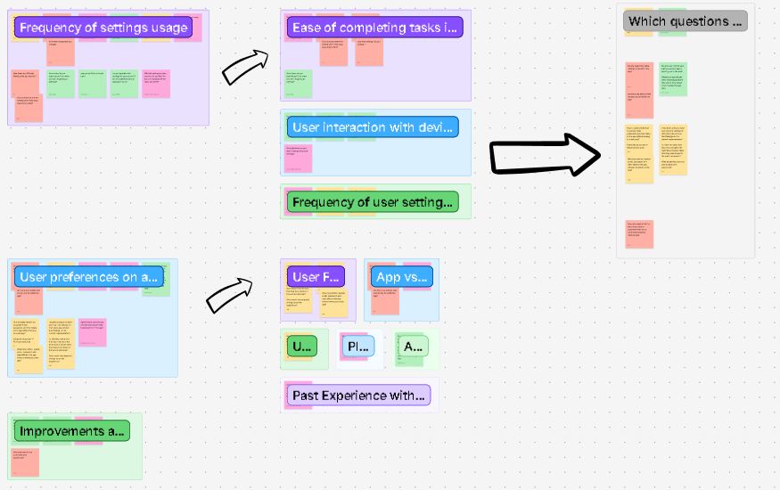

Summary
The goal of this study was to understand how users engage with settings on mobile, including how often they access settings, how easily they complete common account tasks, and whether they prefer completing settings flows in-app or via web redirection. The study captured task success/failure, time on task, and qualitative feedback through an unmoderated UserZoom experience.
My Role
As the UX Researcher on this project, I was responsible for:
- Developing research objectives and success metrics
- Synthesizing early stakeholder goals into measurable study questions
- Building the unmoderated UserZoom study
- Analyzing quantitative metrics (task success & completion time)
- Identifying qualitative friction points
- Documenting findings and presenting recommendations to stakeholders
This was my first project at STARZ, and it required building the confidence to clearly advocate for user pain points in conversations with product and design stakeholders.
The Challenge
One of the biggest challenges in this project was translating user friction into language that felt actionable and impactful to stakeholders. While some participants completed tasks successfully, others experienced visibility issues after redirection — including difficulty locating settings information once transferred to the web environment.
These inconsistencies created a gap between perceived success and actual user comfort. My responsibility was to surface these pain points clearly and confidently, even when the issues were subtle.
This project ultimately strengthened my ability to advocate for users in a stakeholder environment and reinforced the importance of presenting research insights with clarity and conviction.
Study approach
Method
- Type: Remote, unmoderated usability study (UserZoom)
- Environment: Participants used their personal mobile devices
- Data captured: task success/failure, time on task, observations, and qualitative feedback
- Focus: how redirection affects usability and preference for in-app vs. web settings
Tasks tested
- Update email address
- Manage / remove devices
- Find subscription and billing information
Question Development & Synthesis
I synthesized stakeholder goals and questions into themes (frequency, task ease, redirection impact, and user preference). These themes were refined into the final tasks and follow-up questions used in the UserZoom study.
Click image to enlarge.
View Full FigJam BoardKey findings
Redirection often felt unexpected
Many participants noticed the shift from app to browser and described it as disruptive, confusing, or unnecessary—especially when they were already signed into the app.
Re-login and continuity breaks reduced task completion
Some users encountered extra login steps or lost momentum when the experience moved to the web, which increased frustration and led to partial or failed completion for certain tasks.
Information hierarchy on the web affected comprehension
For subscription/billing, users expected their current plan and billing details first. When offers appeared above plan details, multiple participants interpreted the screen incorrectly.
Mobile context matters
Users frequently described switching between app and browser as “extra steps” on a phone, and some worried about losing their place or accidentally ending sessions.
Recommendations delivered
Reduce redirection for high-frequency settings tasks
Prioritize in-app completion for core tasks (account details, devices, billing) to minimize context switching and confusion.
If redirection remains, make it seamless
Improve continuity so users aren’t forced to re-authenticate and can clearly understand where they are, how to return, and what changed.
Clarify hierarchy on subscription/billing screens
Ensure current plan and billing information is visually primary; separate promotions so they don’t look like the user’s active plan.
Use this research to support release quality
Document technical errors and usability breaks found in the flow as “release risks,” and track them as fixable issues tied to measurable user friction.
Reflection
This study helped me build confidence in advocating for users—especially when the issues weren’t just “preferences,” but real breakdowns that blocked users from completing settings tasks. Presenting the findings to stakeholders and the design team reinforced the value of clear evidence (recordings, metrics, and quotes) when influencing product direction.